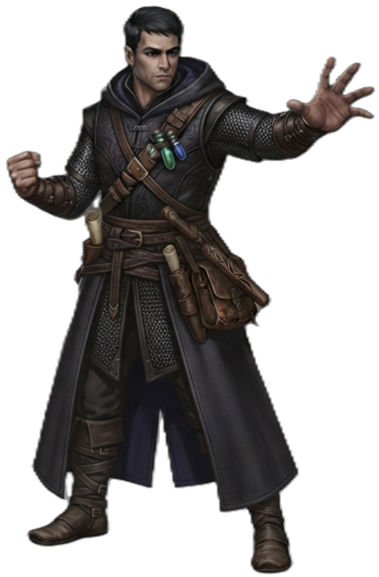

| Rolle | Mobiler Angreifer · Spitzenschaden · Kontrolle |
| Zauberertyp | Kein Zauberer Keine Zauberslots — nutzt Ki |
| Primärer Schadensattribut | Geschick (DEX) |
| Sekundärer Schadensattribut | Weisheit (WIS) |
| Zauberattribut | — |
| TP (L1) | 8 |
| TP pro Level | 5 |
| Rüstung | Keine · Rüstungslos-Verteidigung (RK = 10 + DEX + WIS) |
| Waffen | Mönchswaffen (waffenlos, Stäbe, Kurzschwerter, einfache Waffen) |
| Rettungswürfe | Geschick (DEX), Weisheit (WIS) |
| Attributsteigerung (Level) | 4, 8, 12, 16 |
| Fertigkeiten (3 zur Auswahl) | Akrobatik, Athletik, Intuition, Wahrnehmung, Geistige Stabilität, Heilkunde |
Der MÖNCH kämpft mit dem eigenen Körper als Waffe. Durch jahrelange Disziplin hat er gelernt, seine innere Energie — Ki — zu bündeln und in übermenschliche Schnelligkeit, Präzision und Widerstandskraft zu verwandeln. Er trägt keine Rüstung, weil er sie nicht braucht: Wer ihn treffen will, muss ihn erst einmal fassen. Sein Spielstil lebt von Bewegung, vielen kleinen Treffern und dem gezielten Einsatz von Ki im richtigen Moment.
| Level | Fähigkeit | Beschreibung |
|---|---|---|
| L1 | Kampfkunst | Waffenlose Schläge verursachen 1W4 Schaden (1W6 ab L5, 1W8 ab L11, 1W10 ab L17) und nutzen Geschick (DEX). |
| L1 | Rüstungslos-Verteidigung | RK = 10 + Geschick (DEX) + Weisheit (WIS) ohne Rüstung. |
| L2 | Ki | Ki-Pool in Höhe deines Levels. Die meisten Ki-Fähigkeiten kosten 1 Punkt. Erholt sich bei kurzer Rast. |
| L2 | Rüstungslose Bewegung | +10 ft Bewegungsrate (steigt mit dem Level). |
| L5 | Zusatzangriff | 2 Angriffe pro Angriffs-Aktion. |
| L6 | Ki-Schadensbonus | +Weisheits-Modifikator auf Ki-Fähigkeiten. |
| L11 | Diamantseele | Profan-Bonus auf alle Rettungswürfe. |
| L11 | Verbessertes Ki | Ki-Fähigkeiten werden stärker. |
| L17 | Meisterhaftes Ki | Ki-Fähigkeiten werden weiter verstärkt. |
| L20 | Vollkommenes Selbst | Unbegrenztes Ki — du musst nicht mehr haushalten. |
| Fähigkeit | Aktion | Nutzung | Level | Beschreibung |
|---|---|---|---|---|
| Schlaghagel | Bonus-Aktion | 1 Ki | L2 | PHYSISCH Unmittelbar nach deiner Angriffs-Aktion: führe zwei waffenlose Schläge als Bonus-Aktion aus. |
| Geduldige Verteidigung | Bonus-Aktion | 1 Ki | L2 | Führe die Ausweich-Aktion als Bonus-Aktion aus — Angriffe gegen dich haben Nachteil. |
| Windritt | Bonus-Aktion | 1 Ki | L2 | Führe Rückzug oder Sprung als Bonus-Aktion aus und verdopple deine Bewegungsrate für diesen Zug. |
| Betäubungsschlag | Freie Aktion | 1 Ki | L5 | Nach einem Treffer: Ziel muss einen CON-Rettungswurf ablegen oder wird 1 Runde betäubt. |
| Innerer Frieden | Aktion | 1 Ki | L7 | Entferne alle negativen Conditions von dir selbst — Gift, Betäubung, Verängstigung, Blenden und mehr weichen innerer Disziplin. |
| Erderschütternder Tritt | Aktion | 1 Ki | L14 | PHYSISCH 10ft Flächeneffekt um dich: 3W6 Wuchtschaden + STR-Rettungswurf oder liegend. Feinde in Reichweite werden zu Boden geworfen. |
| Leerkörper | Bonus-Aktion | 1 Ki | L18 | Werde unsichtbar und erhalte Widerstand gegen physischen Schaden für 1 Minute (10 Runden). |
| Zitternde Handfläche | Aktion | 1/Lange Rast | L17 | Berühre ein Ziel: CON-Rettungswurf oder 10W10 Schaden. |
| Fähigkeit | Auslöser | Nutzung | Beschreibung |
|---|---|---|---|
| Geschosse ablenken | Bei Fernkampf-Treffer | 1 Ki | Wenn dich ein Projektil trifft: reduziere den Schaden um 1W10 + Ki-Modifikator. Bei ausreichender Reduktion kannst du das Projektil zurückwerfen. |
| Fähigkeit | Beschreibung |
|---|---|
| Eiserner Körper | PASSIV Widerstand gegen Giftschaden (50 %). |
| Zeitloser Körper | PASSIV Du alterst nicht und brauchst keine Nahrung. |
| Eins mit der Welt | PASSIV Abschlussfähigkeit: Unbegrenztes Ki. |
| Ressource | Mechanik | Verfügbarkeit |
|---|---|---|
| Ki | Punkte in Höhe deines Levels. Die meisten Fähigkeiten kosten 1 Punkt. Ab L20 unbegrenzt. | Ab L2, kurze Rast |
| Kampfkunst-Würfel | Waffenlose Schläge: 1W4 → 1W6 (L5) → 1W8 (L11) → 1W10 (L17) | Ab L1, immer |